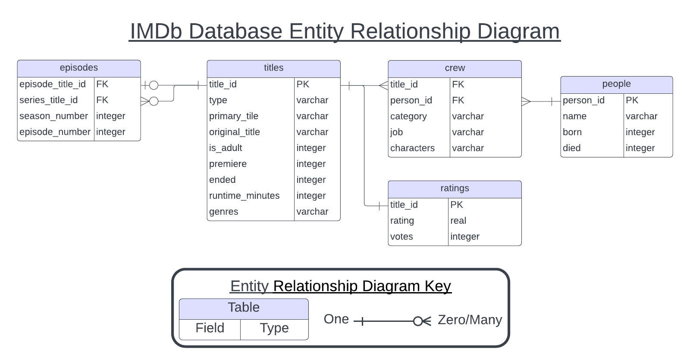

2 Data Stores
A data store is repository for persistently storing and managing collections of data which include not just repositories like databases, but also simpler store types such as simple files, emails etc.
Wikipedia
Once you have decided on a data structure, the next decision to make is what type of data store to use for data storage. A data store is a repository for storing and managing data. While this workshop covers exclusively digital data stores, for most of human history, data stores were analog. Even today, we still use analog data stores like libraries, museums, and filing cabinets. Data stores have two primary functions. First, they need to facilitate people accessing the data (reading) and making changes to it (writing). Second, they need to preserve this access over a period of time.
Regardless of your data’s structure you have two general options for how to store your data digitally: in flat files or in a database. Probably the most common type of data store is a flat file. A flat file is stand alone file on your computer that is not linked to data elsewhere. You can store tabular data in .xlsx and .csv files, tree data in .xml and .json files, graph data in .GML and .DOT, and spatial data in .GeoJSON and .GeoTIFF files. All of these file types have applications you can use to access and modify your, or you can load the data into a programming environment like R or python. In addition, many of thse file types, like csvs and jsons are human readable, meaning you do not need special software to access or modify the data they contain.
In comparison, a database is an organized collection of data that users can interact with through specialized software called a database management system, often abbreviated DBMS, but that is not human readable. Databases have several key characteristics that differentiate them from other data stores like flat files.
Structure - Databases can store data with very complicated structures.
Scalability - Databases can store vastly information more than other digital data stores without modification. Additionally, databases support substantial computing upgrades, which means you can maintain performance as your data set grows.
Access - Databases support concurrent access and have sophisticated methods for managing simultaneous user requests. They also provide fine-grained controls on who can access, modify, and delete data.
Specific types of databases have other differentiating features, like data integrity constraints, flexible data structure support. Databases also have several drawbacks:
Data in databases is not human readable, unlike many file types including csv, xml, DOT, and GML, which are human readable
Database software generally has a steeper learning curve than other software. You may need to learn a specialized language to interact with the data in your database.
There may be cost associated, either for the database software or for hardware needed to run the software.
Databases require some level of administration. Someone will need to be in charge of adding data to the database, determining who has access to what, and fixing things when they break.
If you are running into any of the following issues, a database may be the solution to your problems.
Your data set has many repeated values
Your data set contains information about many unrelated or loosely related studies
You are sharing data with multiple people and everyone seems to have a different version
Your data set is so large, your computer slows down or freezes when trying to view it
You have to keep making the same corrections to your data over and over again
Excel keeps converting your columns to the wrong data type
You have so many pivot tables
You have hundreds (or thousands) of data files you need to share with your collaborators
You think PowerQuery is neat but wish people would stop changing the underlying data while you are using it.
You have a hard time finding and extracting the information you need to answer a particular research question
2.1 Spreadsheets
Spreadsheets, a type of flat file, are the most ubiquitous form of digital data store. If you have used Microsoft Excel or Google Sheets, you have used a spreadsheet. In fact, spreadsheet applications transformed the use of the personal computer, particularly in business circles. Like some databases, spreadsheets impose a tabular data structure on the data they store. Despite this, a spreadsheet is not a database. Like most modern software, spreadsheet applications have graphical user interfaces, making the barrier to entry very low. Spreadsheet software also offers some built in analysis tools, so you don’t have to learn a new application to do basic statistics and data visualization.
Spreadsheet software also suffers from some drawbacks. They offer limited storage capacity, making it difficult to work with large data sets. Excel and LibreOffice have a maximum row number of a little over 1 million and Google Sheets limits you to 10 million cells. Software operations will also slow down if you get close to their data capacity. This means analyzing large data sets is much more tedious than analyzing small ones.
Spreadsheets also store data in ways that cause a lot of data duplication and make data entry susceptible to typos. In the spreadsheet visualized below, we have data on the Die Hard franchise. Specifically, we have information about the actors that starred in the series and the movies in which they appeared.
## title_id person_id primary_title premiered runtime_minutes
## 1: tt0095016 nm0000246 Die Hard 1988 132
## 2: tt0095016 nm0000614 Die Hard 1988 132
## 3: tt0095016 nm0000889 Die Hard 1988 132
## 4: tt0095016 nm0001817 Die Hard 1988 132
## 5: tt0099423 nm0000246 Die Hard 2 1990 124
## 6: tt0099423 nm0040472 Die Hard 2 1990 124
## 7: tt0099423 nm0000889 Die Hard 2 1990 124
## 8: tt0099423 nm0001817 Die Hard 2 1990 124
## 9: tt0112864 nm0000246 Die Hard with a Vengeance 1995 128
## 10: tt0112864 nm0000460 Die Hard with a Vengeance 1995 128
## 11: tt0112864 nm0000168 Die Hard with a Vengeance 1995 128
## 12: tt0112864 nm0001295 Die Hard with a Vengeance 1995 128
## 13: tt0337978 nm0000246 Live Free or Die Hard 2007 128
## 14: tt0337978 nm0519043 Live Free or Die Hard 2007 128
## 15: tt0337978 nm0648249 Live Free or Die Hard 2007 128
## 16: tt0337978 nm0702572 Live Free or Die Hard 2007 128
## 17: tt1606378 nm0000246 A Good Day to Die Hard 2013 98
## 18: tt1606378 nm2541974 A Good Day to Die Hard 2013 98
## 19: tt1606378 nm0462407 A Good Day to Die Hard 2013 98
## 20: tt1606378 nm0935541 A Good Day to Die Hard 2013 98
## genres rating votes name birth death
## 1: Action,Thriller 8.2 936512 Bruce Willis 1955 NA
## 2: Action,Thriller 8.2 936512 Alan Rickman 1946 2016
## 3: Action,Thriller 8.2 936512 Bonnie Bedelia 1948 NA
## 4: Action,Thriller 8.2 936512 Reginald VelJohnson 1952 NA
## 5: Action,Thriller 7.1 380561 Bruce Willis 1955 NA
## 6: Action,Thriller 7.1 380561 William Atherton NA NA
## 7: Action,Thriller 7.1 380561 Bonnie Bedelia 1948 NA
## 8: Action,Thriller 7.1 380561 Reginald VelJohnson 1952 NA
## 9: Action,Adventure,Thriller 7.6 405383 Bruce Willis 1955 NA
## 10: Action,Adventure,Thriller 7.6 405383 Jeremy Irons 1948 NA
## 11: Action,Adventure,Thriller 7.6 405383 Samuel L. Jackson 1948 NA
## 12: Action,Adventure,Thriller 7.6 405383 Graham Greene 1952 NA
## 13: Action,Thriller 7.1 418910 Bruce Willis 1955 NA
## 14: Action,Thriller 7.1 418910 Justin Long 1978 NA
## 15: Action,Thriller 7.1 418910 Timothy Olyphant 1968 NA
## 16: Action,Thriller 7.1 418910 Maggie Q 1979 NA
## 17: Action,Thriller 5.2 214179 Bruce Willis 1955 NA
## 18: Action,Thriller 5.2 214179 Jai Courtney 1986 NA
## 19: Action,Thriller 5.2 214179 Sebastian Koch 1962 NA
## 20: Action,Thriller 5.2 214179 Mary Elizabeth Winstead 1984 NA
## role characters
## 1: actor [""John McClane""]
## 2: actor [""Hans Gruber""]
## 3: actress [""Holly Gennaro McClane""]
## 4: actor [""Sgt. Al Powell""]
## 5: actor [""John McClane""]
## 6: actor [""Thornberg""]
## 7: actress [""Holly McClane""]
## 8: actor [""Al Powell""]
## 9: actor [""John McClane""]
## 10: actor [""Simon""]
## 11: actor [""Zeus""]
## 12: actor [""Joe Lambert""]
## 13: actor [""John McClane""]
## 14: actor [""Matt Farrell""]
## 15: actor [""Thomas Gabriel""]
## 16: actress [""Mai""]
## 17: actor [""John McClane""]
## 18: actor [""Jack McClane""]
## 19: actor [""Komarov""]
## 20: actress [""Lucy""]As you can see, there is a lot of data duplication, meaning our data set takes up more space on our hard drive than it needs to. Additionally, if we have to change the information about a single movie or actor, we would have to make that change in many different places, and potentially miss one or make a mistake. If we accidentally left out an “l” in Bruce Willis’s last name, we would have to modify five cells to fix our data.
Finally, most spreadsheet applications store their data locally, so unless you are militant about version control outside the application, it is easy to end up with people working on different versions of the data. Google Sheets offers shared access and some version control, but still fails to deliver on storage capacity, and data integrity.
2.2 Relational Database Management System
Relational Database Management Systems (RDBMSs), or relational databases, are one type of database. When people use the word “database”, nine times out of ten they are referring to a relational database. Like spreadsheets, RDBMSs impose a tabular structure on the data they contain. Unlike spreadsheets the structure of that data can be fairly complex. Relational databases are made up of multiple tables connected by shared columns, called keys.
Users interact with an RDBMS through the Standardized Query Language (SQL) instead of a graphical user interface. SQL is a programming language, but it is one specifically designed for interacting with relational databases. SQL standardizes your interactions with a database, and makes them reproducible. This means it is much easier to ensure everyone is working with the same set of data. However, SQL has a higher barrier to entry than a graphical user interface like Excel.
To learn more about using SQL in practice, check out the Intro to SQL (reader, workshop) and Spatial SQL (reader, workshop) resources.
2.2.1 Relationship keys
A relationship key is a column or pair of columns that links two tables. There are two types of relationship keys: primary keys and foreign keys. A primary key, sometimes called an index, is a column that uniquely identifies each row in a particular table. It is generally the first column in the table and its name often contains the letters “ID”. A foreign key is a column in one table whose values correspond to a primary key in another table.
2.2.2 Entity Relationship Diagrams
Since relational databases are not human readable, it can be helpful to have a visual summary of a database without actually needing to interact with it. That is where the Entity Relationship Diagram (ERD) comes in. ERDs are a standardized way to depict the structure of a relational database. Each box in the diagram represents a table, with the table title at the top and the column names listed below it. The column data type appears next to each column name. The
Connector lines link primary/foreign key pairs. These lines specify which tables can be combined, and which keys should be used to combine them. The connector lines also specify what type of relationship between the two tables.

The most common type of table relationship in relational databases is the one-to-many relationship. In this case, one row in table A may be linked to many rows in table B. This is the case for the relationship between the people and crew tables in the IMDB. One-to-one relationships are also fairly common in relational databases. Two tables are one-to-one when one observation in table A only corresponds to one observation in table B. This is the relationship between titles and ratings tables in the IMDB database.
As you might guess, there is a third type of relationship: many-to-many. Many-to-many relationships are the sleeping giant of database relationships. They can be very useful, but if you are not careful, they can multiply the size of your data several times over. Library book checkout transactions are one example of a many to many relationship. A single patron can check out multiple books in a single transaction, and multiple patrons can check out a book.
2.2.3 Why Use Relational Databases?
There are three primary reasons to use a RDBMS as a data store:
Reduce data duplication
Speed up and standardize accessing and updating the database
Ensure data integrity
In our Die Hard spreadsheet example, we had 260 cells. However, in a relational database, storing that same data only requires 156 cells. That is a 40% reduction in data size. For a multi-gigabyte data set, 40% makes a huge difference. Additionally, much of that information was stored as numbers instead of text, which makes its size on your hard drive even smaller. Finally, we selected a subset of columns from each table, which means we didn’t need to work with ALL of the data just because we wanted to work with some of it. Subsetting like this is much harder in traditional spreadsheet software.
The source database of our Die Hard data, IMDB, is massive relative to spreadsheet software capabilities. The titles table alone has 10 million observations, and the crew table has over 60 million. Despite this, extracting the Die Hard movie franchise information using an SQL query took about half a second.
The SQL query used to extract the Die Hard data is also reproducible. If I want to collaborate with a colleague on my analysis of Die Hard, I don’t have to send the data set to my collaborator. Instead I can provide them access to to the IMDB database and my SQL query. If I find problems in the data at a later time, I don’t need to send a whole new data set, which could introduce confusion about which data to use. All I need to do is update the database, and tell my colleague to rerun their SQL query. No additional computer storage necessary.
With an RDBMS, even though the data you analyze may have duplicates, you don’t need to modify each duplicate value, in the case that one requires a correction. All changes to the data can be made to the singleton values in their original tables. Correcting Bruce Willis’s misspelled last name only requires fixing his name once in the “people” table. Then, any time you extract data from the database table, that change will automatically propagate to the new data. While it may be easy to successfully fix 5 errors, it will be much harder to fix 50, or 5,000. This is especially true if they are scattered throughout your data set and not just in a single column.
2.2.4 RDBMS Software
Because of relational databases’ widespread utility, there are many software options to choose from when creating a database. While all of them work off the same basic SQL, each one puts its own particular spin on the language in terms of additional functionality. All of the SQL database software options in the table below have wide community and/or professional support. There are many more RDBMS applications available for more specific use cases (ex. for use with Amazon AWS), but these are the most common and widely supported. All of them provide some level of support for spatial data. However, that level of support varies, so if you have specific requirements, it’s best to do additional research before making a decision.
| Software | Ease of Use | Documentation/ Support | Cost | License |
|---|---|---|---|---|
| SQLite | Easier | Extensive documentation and community support | $0 | Public Domain |
| PostgreSQL | Harder | Spotty documentation, but with robust community support | $0 + cost of hosting | Open Source |
| MySQL | Easier | Large community base, No professional support without paid subscription | $0 - Low Cost | Partially Open Source |
| Microsoft SQL Server | Easier | Robust professional and community support | High Cost | Proprietary |
| Oracle | Harder | Robust professional and some community support | High Cost | Proprietary |
2.3 NoSQL Databases
Not Only SQL, or NoSQL, databases are another type of database. They are primarily defined by what they do not do, namely store data in relational tables, as a RDBMSs would. Instead, NoSQL databases do not necessarily impose external structure on the data they contain. In fact, NoSQL databases can contain data from multiple structures, including
- documents
- key-value pairs
- graphs
- trees
- wide column tables
This makes NoSQL databases are much better at storing tree and graph data, as those data structures do not fit well into relational tables.
2.3.1 Why Use NoSQL Databases?
Compatible with multiple data non-tabular structures
Capable of storing vast amounts of data with impressive speed
Adding more computing power is easier
Because NoSQL databases do not have to adhere to the more rigid structure of relational databases, they can store more data and access and modify it more quickly than relational databases. This is particularly important when working with textual data, which can easily take up many terabytes of storage. It is also generally easier to upgrade NoSQL databases, which is important when you are working on the edge of what is possible data storage-wise.
2.3.2 Example Software
Not every NoSQL database supports every data structure. Some support multiple structures while others specialize in one. Unlike RDBMSs, all of the most common NoSQL software is open source, though the MongoDB license is slightly more restrictive than most open source licenses. Because of this they are also low cost to implement, though you can always pay for additional features and support. Similar to RDBMSs, all the most common NoSQL database software provides some support of spatial data. However, that support is limited to vector data and the functionality available varies fairly widely.
| Software | Data Structure | Spatial Support |
|---|---|---|
| MongoDB | Tree/Document | vector |
| Couchbase | Tree/Document | vector |
| Cassandra | Column family | vector (DataStax) |
| Redis | key-value | point only |
| Neo4J | Graph | vector |
| ArangoDB | Tree/Document, graph, key-value | vector |